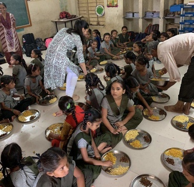

Babson College, MS in Marketing and Entrepreneurship
London School Of economics - Marketing (summer)
UCL school of management (Semester abroad)
Leadership and Extra curriculars
Leadership
Co- Founder Samvedana
Non- profit organization that crowd funds to solve major problems like education, food for all, and gender inequality in the world.
Collaborated with State Government and executed marketing strategy to seek financial support from local philanthropists, resulting in crowdsourcing of $14960 in a span of 2 months
Distributed books and school bags in 100 schools across villages in Gujarat
Installed solar-powered digital learning solution in schools, spread across 3 states, increasing attendance by 11%
President of Babson Undergraduate Family Entrepreneurship Club
Campus activity board (CAB) - Marketing committee

Skills and Interest
Languages: English, Hindi, Gujarati, Sanskrit
Skills: Database design, TableauTeam worker, good managerial skills, great leadership skills, focused, critical thinker, good communication skills, professionalism, adaptability, creative, Canva, Digital marketing, project management, Microsoft office social media marketing, campaign management, email marketing, consumer behavior drivers
Interests: Painting, Traveling to new places, Playing Ukelele, Gardening,marketing, Basketball, Badminton, social media marketing, video making, vlogging, cooking, volunteering, learning new languages and cultures